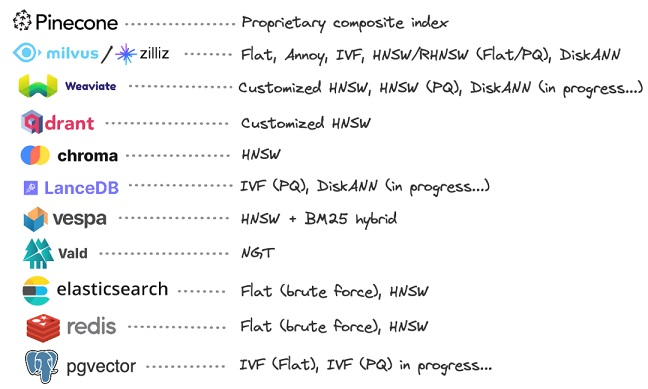

向量数据库 #
-
国产
- Milvus
- Tencent
- zilliz cloud
-
国外
- Pinecone
- FAISS [ANN]
- Chroma
- Weaviate
向量数据库-索引方式 [7] #

向量的相似度算法[3] #
- Cosine Similarity * 余弦
- Dot Product *
- Squared Euclidean (L2-Squared) * 欧式距离
- Manhattan (L1 Norm or Taxicab Distance) *
- Hamming *
- ANN
比较[4] #
| Similarity Metric | Vector properties considered |
|---|---|
| Euclidean distance | Magnitudes and direction |
| Cosine similarity | Only direction |
| Dot product similarity | Magnitudes and direction |
参考 #
- 云原生向量数据库Milvus扫盲，看完这篇就够了
- 云原生向量数据库Milvus（二）-数据与索引的处理流程、索引类型及Schema
- Distance Metrics in Vector Search
- Vector Similarity Explained
- xxx
- xxx
- 向量数据库（第 1 部分）：每个数据库有何不同？
1xx. 微信向量检索分析一体化数仓探索：OLAP For Embedding *** 1xx. Meta向量数据库Faiss介绍